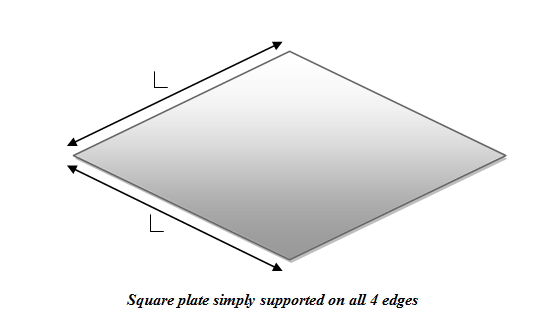
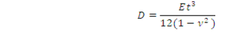
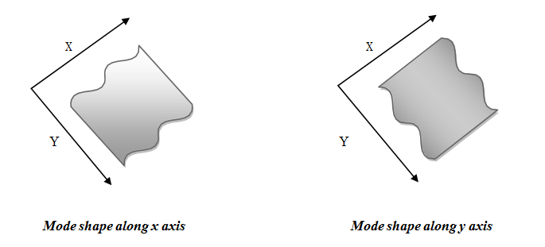

TheoryINTRODUCTION  This simulation experiment aim to study the modes of vibrations of square plate simply supported on all edges. The simply supported plate is different from lumped masses (discrete system). In the discrete systems, stiffness, mass and damping are modelled as discrete properties. The mathematical models for discrete system are ordinary differential equations, which thereby render themselves quite conductive to numerical solution techniques. The alternative continuous method of modelling physical system, which is considered here, is based on the principle of distributed mass and stiffness characteristics. Such a system for which stiffness and mass are considered to be distributed properties (rather than discrete) is referred as distributed system. Unlike a discrete system that possess a finite number of degree of freedom (DOF), the distributed systems, which are considered to be composed of infinite number of infinitesimal mass particles, theoretically possess an infinite number of degrees of freedom(DOF). In the case of plate, it is divided into number of strip along the X and the Y direction. However, only the first few modes are much significant. It is thus not necessary to compute all of them. This computer model is based on distributed system. By using this online java program, the user can easily get the natural frequencies of plate as well as the corresponding mode shapes. In addition, there is an exercise for user at the end of programme. The user need to plot the graph between frequencies and length of plate keeping all others factors constant. For simply supported plate, the frequencies fn and the mode shapes ùùì(x,y) are given by (Mukhopadhyay, 2006) where the parameter D is given by  n and m are number of troughs/ crests in x and y directions respectively. Further, L is length of plate E is Young‚Äôs modulus of elasticity ùúå is density User can get different modes of vibration of simply supported plate from this program, just in single click.  |